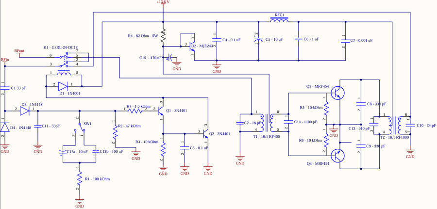

Overview
During BC's wildfire seasons, rural communities routinely lose power, cellular, and internet service — exactly when coordination matters most. Our capstone team designed a high-power, low-cost HF amplifier that pairs with affordable HF radios to restore long-range voice links. The design modernizes the Motorola EB63 application-note amplifier: obsolete parts were replaced with current equivalents, and we added mode selection, a manual bypass path, and fuse protection.
The filtering chain is fully custom: a two-stage π-network constant-k band-pass filter (1.8–30 MHz) on the input and a 9th-order T-network Chebyshev low-pass filter (30 MHz cutoff) on the output, both simulated in LTspice before layout. The prototype was assembled with a custom coil-winding jig, housed in a laser-cut and 3D-printed enclosure, and validated on a VNA (filter S21 response) and with AM-mode power sweeps against the 140 W PEP target.
My role
- Designed and iterated the project's support PCBs in EasyEDA — band-pass filter (four revisions), low-pass filter, switch board, fuse board, and LM317 step-down board — through to CAM fabrication files.
- Separated the EB63A RF deck from the switching circuitry to simplify assembly and make controls accessible on the enclosure.
- Ordered an MRF454 footprint-test PCB to verify the power-transistor land pattern before committing the main board.
- Wound and assembled the filter boards, then validated their frequency response on the VNA.

Files & downloads
The team also maintains a detailed project site: ECE 499 — Design Project II.